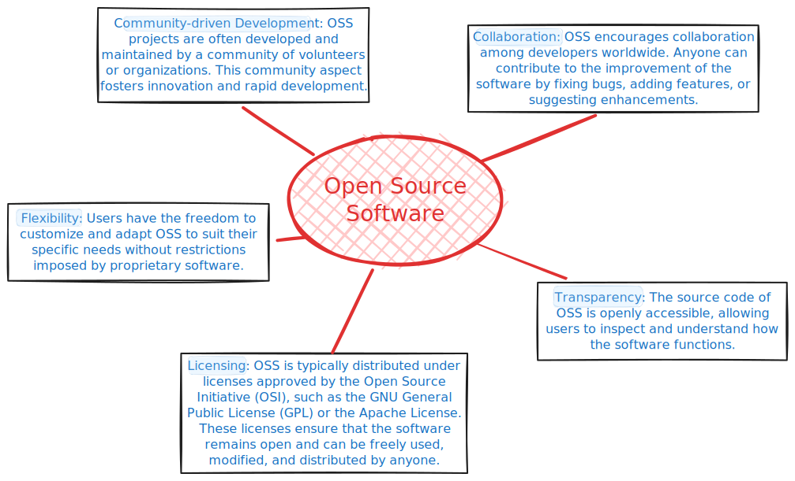

The potential of Open Source Software and Open Educational Resources for positive impacts on teaching, learning, and research is immense.
Open Source Software and Open Educational Resources
Ralph-Uwe Börner 1
rub@gephysik.tu-freiberg.de
1 Institute of Geophysics and Geoinformatics, TU Bergakademie Freiberg
Open Source Software
Open Source Software (OSS) refers to software whose source code is freely available to users. This means that anyone can view, modify, and distribute the code as per the terms of the respective license.

Open Educational Resources
Open Educational Resources (OER) refer to educational materials that are freely accessible, openly licensed, and available for use, reuse, modification, and sharing.

Benefits of OSS and OER


Best practice examples
Quarto
Quarto is an open-source scientific publishing system.
- Author using Jupyter notebooks or with plain text markdown in your favorite editor.
- Create dynamic content with Python, R, Julia, and Observable.
- Publish reproducible, production quality articles, presentations, dashboards, websites, blogs, and books in HTML, PDF, MS Word, ePub, and more.
A small presentation about Quarto, built with Quarto:
Myst
MyST is an ecosystem of open-source, community-driven tools designed to revolutionize scientific communication.
MyST’s powerful authoring framework supports blogs,
online books, scientific papers, reports and journals articles.
Reactive Notebooks
marimo is an open-source reactive notebook for Python — reproducible, git-friendly, executable as a script, and shareable as an app.
When you change a variable, Pluto.jl automatically re-runs the Julia cells that refer to it. Cells can even be placed in arbitrary order - intelligent syntax analysis figures out the dependencies between them and takes care of execution.
Collection of Awesome OSS and OER projects
This QR code links to a GitHub repository which hosts a list that might be a good starting point for collecting interesting OSS and OER projects related, but not restricted, to Geophysics: